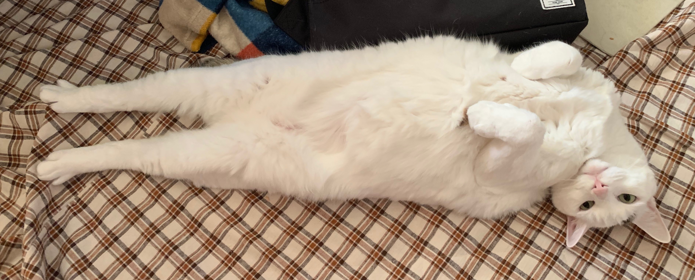
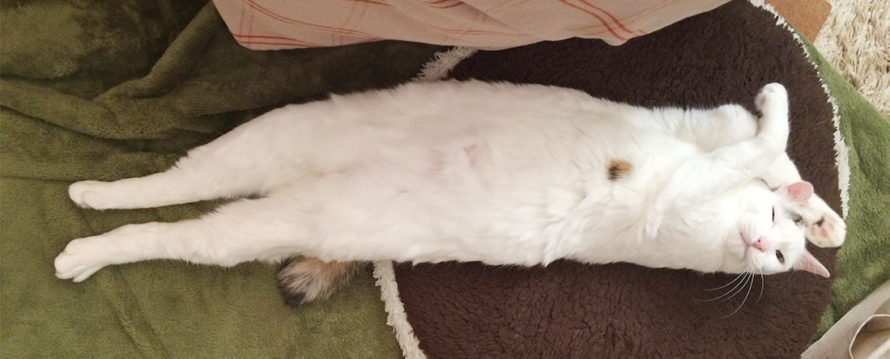
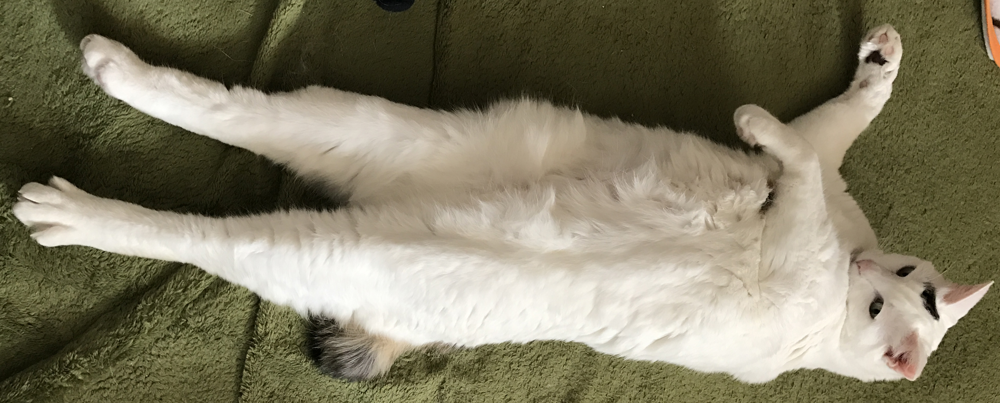
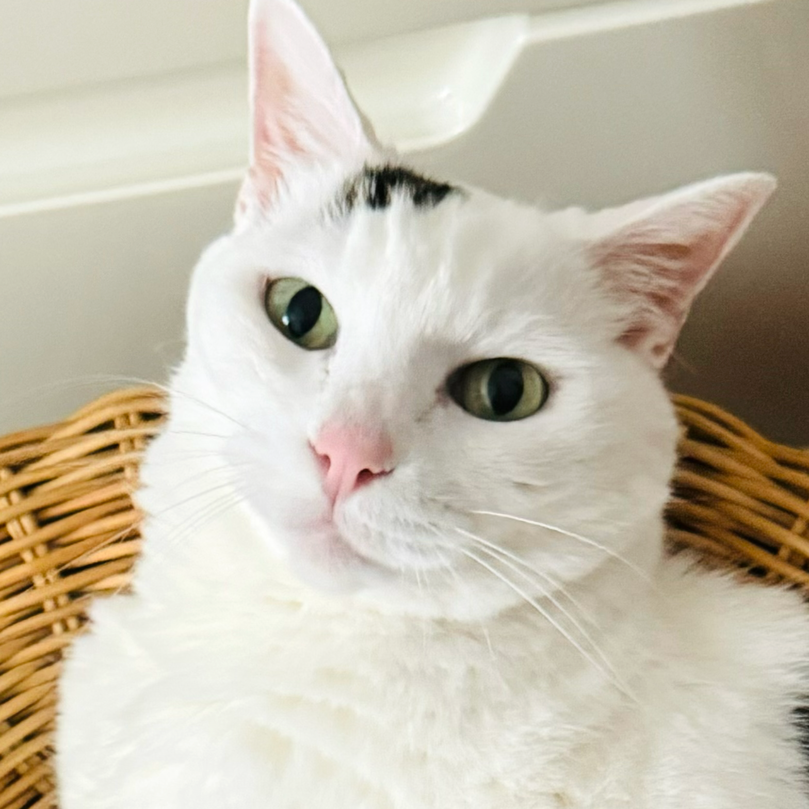
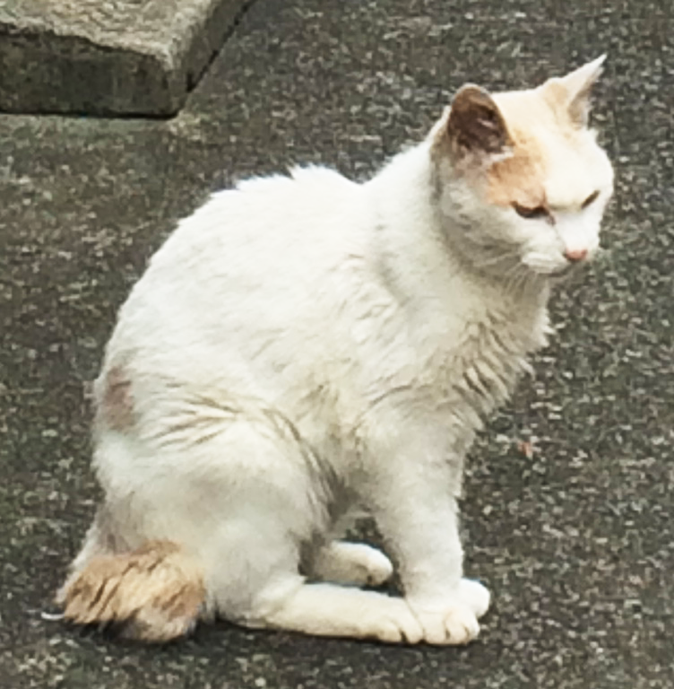
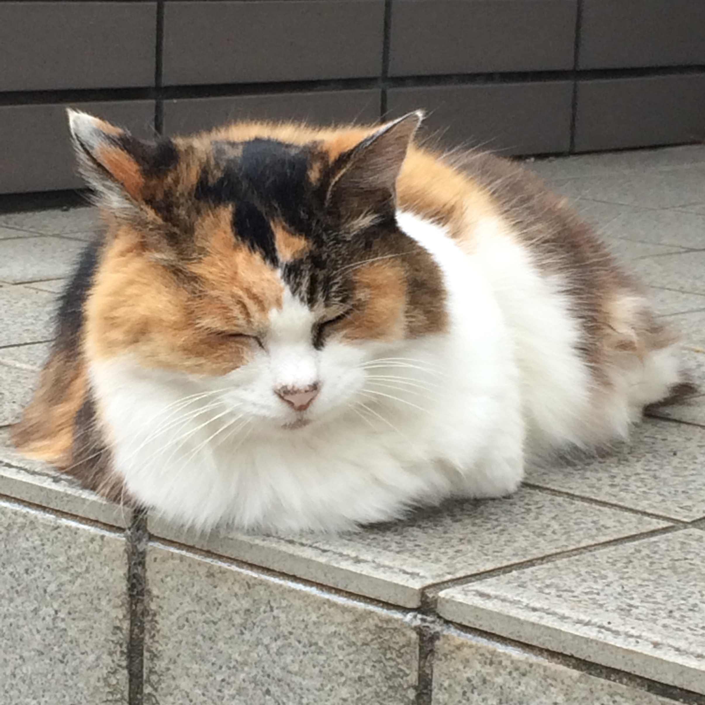
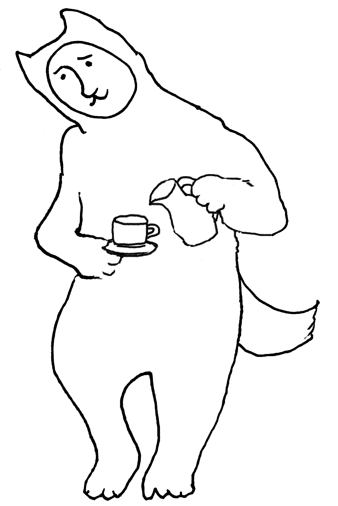

猫喫茶
ねこじゃら

猫喫茶
ねこじゃら

猫喫茶
ねこじゃら
about

「猫喫茶
ねこじゃら」とは
猫喫茶ねこじゃらは、
店内に猫のいる
小さな喫茶店です。
3匹のねこスタッフは
店内で自由きままに
過ごしています。
一般的な猫カフェのような
時間料金制ではありません。
お飲み物のご注文のみで、
ふつうの喫茶店として
おくつろぎいただけます。
メニューは
からだにやさしいお茶と、
素朴なおやつ、
ねこスタッフ用のおやつも
ちょっぴり
ご用意しております。

cats

ぷーちゃん

ちーちゃん

みーちゃん
ねこを眺めるお茶タイム

menu
access
お問い合わせ
042-670-8122
定休日
水曜・木曜
営業時間
12：00～20：00